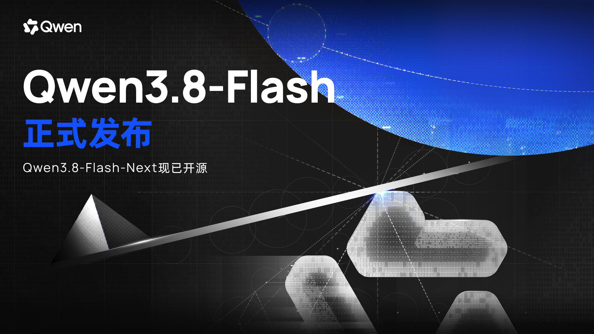
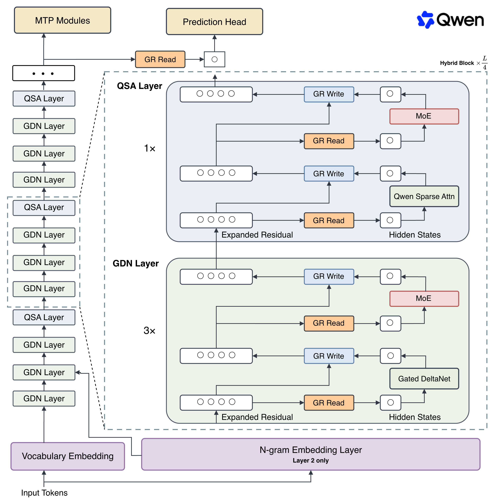
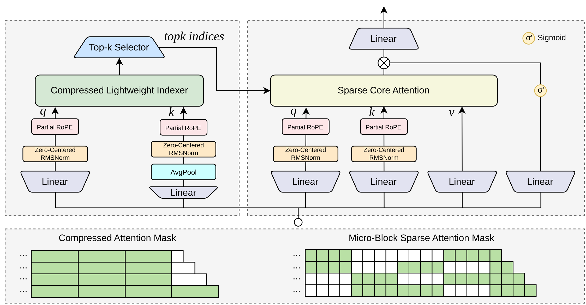
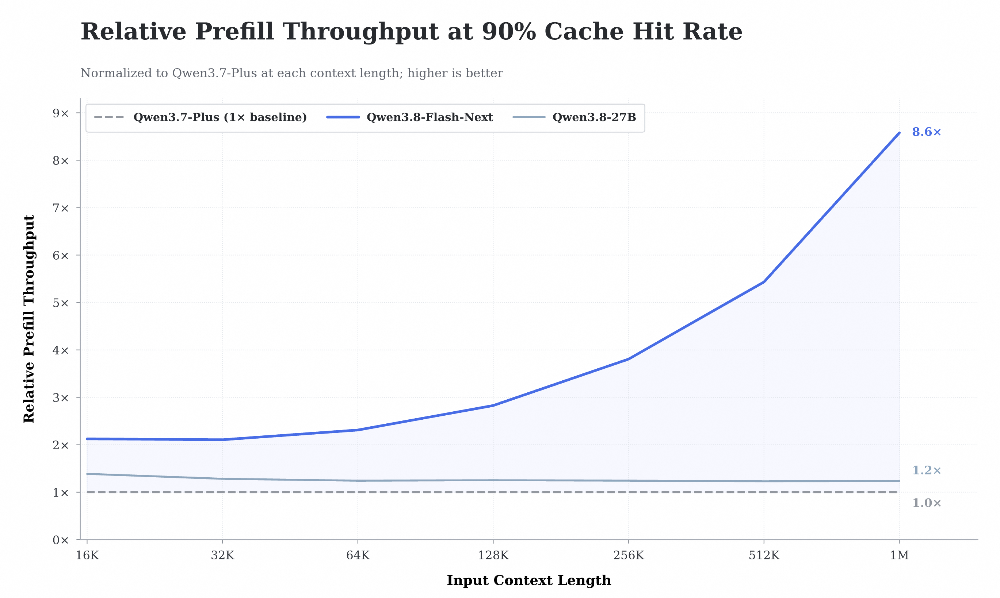

Qwen3.8-Flash

一页速览
| 维度 | Qwen3.8-Flash |
|---|---|
| 更新时间 | 2026-08-25；Flash-Next 开源发布于 2026-08-26 |
| 定位 | Qwen3.8 正代主干中的低成本多模态模型 |
| 开放架构 | 125B core / 6B active + 51B N-gram embedding + 4B MTP |
| 层数 / hidden | 48 layers / 2560 |
| 核心结构 | Gated DeltaNet + Qwen Sparse Attention + MoE + Gated Residual |
| 输入 / 输出 | 文本、图片、视频 → 文本 |
| Context / max output | 1M / 131K；最大思维链 262K |
| API | qwen3.8-flash，OpenAI / Anthropic 兼容接口 |
| 标准价格快照 | 输入 ¥0.8/MTok，输出 ¥2.7/MTok，缓存命中 ¥0.1/MTok |
| 开放权重 | Qwen/Qwen3.8-Flash-Next；生产 API 在此基础上增加默认 1M 与官方内置工具 |
我的核心判断
1. 它是面向 agent rollout 成本设计的模型
Qwen3.8-Flash-Next 每四个 block 中，三层使用 Gated DeltaNet 压缩历史，一层使用 QSA 从全局上下文中找回精确信息。也就是说，它没有要求每个 token 都完整回看 1M history，而是把“持续状态”和“稀疏证据检索”拆成两条路径。

2. QSA 优化的不只是 attention，还包括“寻找该看哪里”的成本
许多 sparse attention 仍需 token-level indexer 扫描长序列。QSA 先把 token 聚合为 micro-block，再在 block 粒度选出重要区域；公开配置的预算是 512 blocks / 2048 tokens。官方报告在 1M context 下，QSA kernel 的 prefill / decode 最高加速分别为 7.6× / 4.9×；90% prefix-cache hit 的线上近似场景中，prefill throughput 达到 Qwen3.7-Plus 的 8.6×。


3. N-gram Embedding 是“容量不等于每 token FLOPs”的另一条路线
主干之外加入 51B bigram / trigram embedding 参数，放在第二层，通过确定性索引查表。由于访问位置可以提前确定，embedding table 可卸载到 host memory，并用异步 prefetch 与计算重叠。它类似一个低计算成本的局部模式记忆库，与 MoE 的动态专家容量互补。
4. 生产版与开放版要分开记录
Qwen3.8-Flash-Next是开放权重架构预览，原生 262K，可扩到 1M。qwen3.8-flash是官方生产服务，默认 1M，并提供代码解释器、图片搜索、网页抓取和联网搜索等内置工具。- 官方明确说生产版“based on” Flash-Next，但没有承诺所有 serving 配置和权重快照完全相同，因此参数与 benchmark 应注明来自 Flash-Next。
架构拆解
| 组件 | 公开配置 | 对 agent 的意义 |
|---|---|---|
| Gated DeltaNet | 48 V heads / 16 QK heads，head dim 128 | 固定状态压缩局部历史，降低长轨迹成本 |
| QSA | 24 Q / 2 KV heads；micro-block indexer | 从 1M history 精确召回远距离证据 |
| MoE | 512 experts；10 routed + 1 shared active | 大容量但每 token 只激活少量专家 |
| Gated Residual | 4 residual branches，rank 320 | 保留早期信息并抑制 activation outlier |
| N-gram Embedding | 51B，20M bigram/trigram entries | 用 host-memory-friendly 查表扩局部模式容量 |
| MTP | 1 layer，多步训练 | 提高 speculative decoding 接受率与主干性能 |
关键结果
以下为官方 Flash-Next 口径；不同 harness 的分数不可直接跨表比较。
| Benchmark | Flash-Next | Qwen3.8-27B | Qwen3.7-Plus | 判断 |
|---|---|---|---|---|
| DeepSWE 1.1 | 58.7 | 42.2 | 16.5 | 6B active 的 agentic coding 优势明显 |
| SWE-bench Pro | 62.5 | 61.7 | 55.8 | 与 27B Dense 接近 |
| CoWorkBench | 73.9 | 70.7 | 65.1 | 长程办公是强项，但 benchmark 为内部集 |
| JobBench | 55.7 | 33.4 | 27.6 | 专业任务提升很大 |
| Toolathlon Verified | 73.5 | 67.1 | 50.6 | 工具调用能力突出 |
| AndroidWorld | 84.5 | 81.9 | 81.0 | 多模态操作能力较强 |
| OSWorld 2.0 partial | 52.3 | 48.0 | 21.5 | computer-use 明显提升 |
| Vision2Web | 64.0 | 62.9 | 42.1 | 前端视觉闭环改善 |
API 与价格注意
- API 页面标注输入 ¥0.8、输出 ¥2.7、缓存命中 ¥0.1 / MTok。
- 同期技术博客仍写 ¥1 / ¥3，说明价格会动态调整；本笔记采用 2026-08-27 模型市场快照。
- 支持 thinking / non-thinking、函数调用、结构化输出、批量任务和 context cache。
- 最大输入 991K；思考模式最大输入 983K；最大输出 131K。
- TPM 页面显示 5M，实际并发和区域限制仍需在控制台验证。
对 Agent Training 的启发
可以直接转成几组实验：
- 在相同 solved-task rate 下比较 full attention、GDN+QSA 和 KV compression 的 rollout 成本。
- 将 tool trajectory 中的固定短模式写入外部 n-gram / retrieval memory，比较它与 MoE 专家记忆的分工。
- 对 256K→1M 的 agent history 测试 evidence recall，而不只做 passkey retrieval。
- 训练时显式模拟高 prefix-cache hit 的并发场景，优化“每个成功任务”的服务成本。
- 对内部 CoWorkBench / RecreationBench 结论保持克制，优先在可复现 harness 上验证。